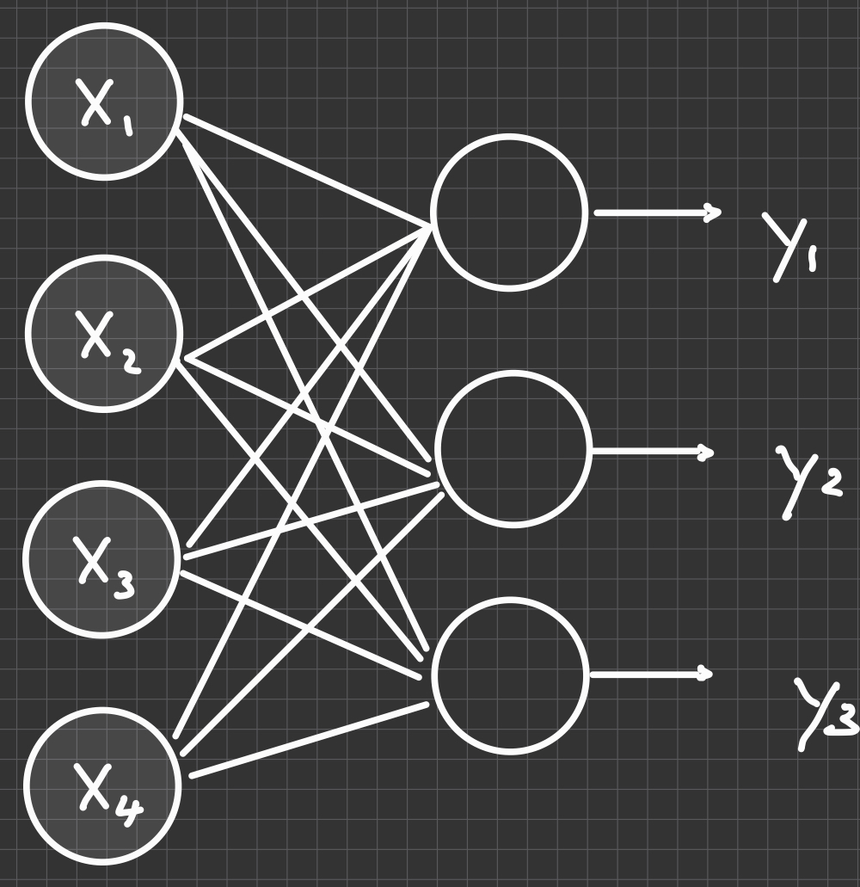

Code
import matplotlib.pyplot as plt
from sklearn import datasets
import torch
import torch.nn as nnThomas Manke
October 28, 2025

neuron layer receiving multiple inputs - and calculating multiple outputs.X.shape = torch.Size([150, 4]), y.shape = torch.Size([150])… requires minimal changes to pytorch code
n_epochs = 10000
model = nn.Linear(4, 3) # change: n_in = 4 (features), n_out = 3 (classes)
loss_func = nn.CrossEntropyLoss() # Cross-Entropy
# all below as before
optimizer = torch.optim.SGD(model.parameters())
model.train()
for epoch in range(n_epochs):
# model predictions are interpreted as z = logits
z = model(X)
loss = loss_func(z, y)
optimizer.zero_grad()
loss.backward()
optimizer.step()
print("Fitted parameters:")
print("Intercept (bias):", model.bias.detach().numpy())
## Notice more weights
print("Coefficients (weights):", model.weight.detach().numpy())
print('Loss: ', loss) Fitted parameters:
Intercept (bias): [ 0.4097849 -0.00864549 0.22877324]
Coefficients (weights): [[ 0.31035995 0.61378133 -1.4084837 -0.27761978]
[ 0.09734378 -0.3853656 0.26491988 -0.44041577]
[-0.6314199 -0.75229895 1.0699543 0.51602477]]
Loss: tensor(0.3601, grad_fn=<NllLossBackward0>)Now the model predictions \(z\) (logits) can be interpreted as probabilities, and the class with the maximal probability will be the class prediction.
\[ p_k = \frac{e^{z_k}}{\sum_{j=1}^{K} e^{z_j}} \]
This function is also called softmax, because it basically gives the largest probability for largest logit \(z_k\) (for every sample)
The probabilities are normalized \[ \sum_{k=1}^{K} p_k = 1 \]
for one sample \[ \mathcal{L}(\mathbf{y}, \mathbf{p}) = -\sum_{k=1}^{K} y_k \log(p_k) \]
for all samples
\[ L = \frac{1}{N} \sum_i \mathcal{L}(\mathbf{y}_i, \mathbf{p}_i) \]
model.eval()
with torch.no_grad():
z = model(X)
y_prob = z.softmax(dim=1) # for easier interpretation
y_pred = z.argmax(dim=1) # class predition = largest logit
acc = (y_pred == y).float().mean().item()
print('y_true: ', y[:3])
print('z (logits): ', z[:3])
print('y_prob: ', y_prob[:3])
print('y_pred: ', y_pred[:3])
print(f"\n\nTraining accuracy: {acc:.3f}")y_true: tensor([0, 0, 0])
z (logits): tensor([[ 2.1135, -0.5782, -4.0234],
[ 1.7445, -0.4050, -3.5209],
[ 1.9460, -0.5280, -3.6521]])
y_prob: tensor([[0.9346, 0.0633, 0.0020],
[0.8915, 0.1039, 0.0046],
[0.9192, 0.0774, 0.0034]])
y_pred: tensor([0, 0, 0])
Training accuracy: 0.967 precision recall f1-score support
setosa 1.00 1.00 1.00 50
versicolor 1.00 0.90 0.95 50
virginica 0.91 1.00 0.95 50
accuracy 0.97 150
macro avg 0.97 0.97 0.97 150
weighted avg 0.97 0.97 0.97 150
---
title: Multinomial Regression
jupyter: pytorch
draft: false
categories:
- multinomial regression
- iris
image: "images/neuron_multinomial.jpeg"
description: Handle multiple outputs
---
## Generalization: more output variables

```{python}
#| label: imports
import matplotlib.pyplot as plt
from sklearn import datasets
import torch
import torch.nn as nn
```
## Get Iris data
```{python}
#| label: get_iris_data
# get iris data from sklearn
iris = datasets.load_iris()
X = iris.data # all four columns
y = iris.target # forth column
# convert to tensors
X = torch.tensor(X, dtype=torch.float32)
y = torch.tensor(y, dtype=torch.long)
print(f"X.shape = {X.shape}, y.shape = {y.shape}")
```
## Model Training
... requires **minimal changes** to pytorch code
```{python}
#| label: multivariate_model
n_epochs = 10000
model = nn.Linear(4, 3) # change: n_in = 4 (features), n_out = 3 (classes)
loss_func = nn.CrossEntropyLoss() # Cross-Entropy
# all below as before
optimizer = torch.optim.SGD(model.parameters())
model.train()
for epoch in range(n_epochs):
# model predictions are interpreted as z = logits
z = model(X)
loss = loss_func(z, y)
optimizer.zero_grad()
loss.backward()
optimizer.step()
print("Fitted parameters:")
print("Intercept (bias):", model.bias.detach().numpy())
## Notice more weights
print("Coefficients (weights):", model.weight.detach().numpy())
print('Loss: ', loss)
```
## Predict and Plot
Now the model predictions $z$ (logits) can be interpreted as
probabilities, and the class with the maximal probability will be the class prediction.
::: {.callout-note collapse="true"}
### Converting logits to probabilities
$$
p_k = \frac{e^{z_k}}{\sum_{j=1}^{K} e^{z_j}}
$$
This function is also called `softmax`, because it basically gives the largest probability for largest logit $z_k$ (for every sample)
The probabilities are normalized
$$
\sum_{k=1}^{K} p_k = 1
$$
:::
::: {.callout-note}
### Cross-entropy loss
for one sample
$$
\mathcal{L}(\mathbf{y}, \mathbf{p}) = -\sum_{k=1}^{K} y_k \log(p_k)
$$
for all samples
$$
L = \frac{1}{N} \sum_i \mathcal{L}(\mathbf{y}_i, \mathbf{p}_i)
$$
:::
```{python}
#| label: prediction_plot
#| code-fold: true
model.eval()
with torch.no_grad():
z = model(X)
y_prob = z.softmax(dim=1) # for easier interpretation
y_pred = z.argmax(dim=1) # class predition = largest logit
acc = (y_pred == y).float().mean().item()
print('y_true: ', y[:3])
print('z (logits): ', z[:3])
print('y_prob: ', y_prob[:3])
print('y_pred: ', y_pred[:3])
print(f"\n\nTraining accuracy: {acc:.3f}")
```
## Confusion Matrix
```{python}
#| label: confusion_matrix
#| classes: preview-image
from sklearn.metrics import confusion_matrix, ConfusionMatrixDisplay, classification_report
cm = confusion_matrix(y, y_pred.numpy())
disp = ConfusionMatrixDisplay(confusion_matrix=cm,
display_labels=iris.target_names)
disp.plot(cmap='Blues')
```
## Classification Report
```{python}
#| label: classification_report
report = classification_report(y, y_pred.numpy(), target_names=iris.target_names)
print(report)
```
[Confusion Matrix & Jargon (Wikipedia)](https://en.wikipedia.org/wiki/Confusion_matrix)
```{python}
#| label: roc_curve
#| eval: false
#| echo: false
from sklearn.preprocessing import label_binarize
from sklearn.metrics import roc_curve, auc
class_names = iris.target_names
K = len(class_names)
# Binarize ground truth for OvR
y_bin = label_binarize(y, classes=np.arange(K)) # shape (N, K)
fpr, tpr, roc_auc = {}, {}, {}
for k in range(K):
fpr[k], tpr[k], _ = roc_curve(y_bin[:, k], y_prob[:, k])
roc_auc[k] = auc(fpr[k], tpr[k])
plt.figure()
for k, name in enumerate(class_names):
plt.plot(fpr[k], tpr[k], label=f"{name} (AUC={roc_auc[k]:.3f})")
plt.plot([0, 1], [0, 1], linestyle=":")
plt.xlabel("False Positive Rate")
plt.ylabel("True Positive Rate")
plt.title("Multiclass ROC (one-vs-rest)")
plt.legend(loc="lower right")
plt.tight_layout()
plt.show()
```